English Style Close Helm (c. 1510)
(Note that the Bar Grill is a Late 16th century style)
Finished Sept. 16, 2000
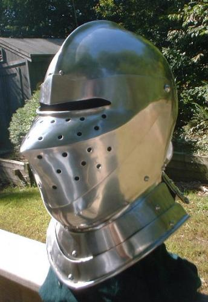
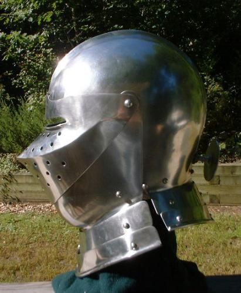
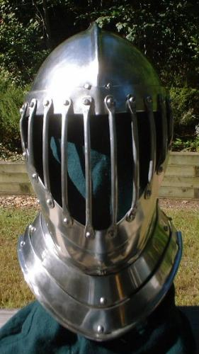
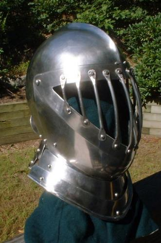
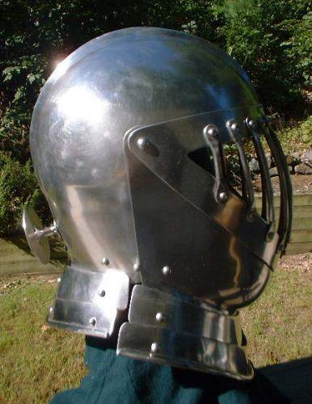
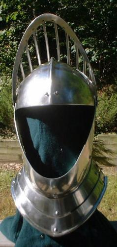
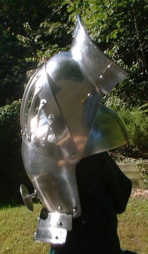
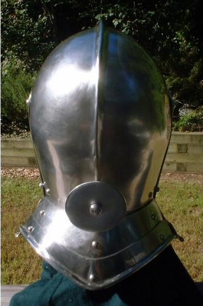
Finished June 25, 2000


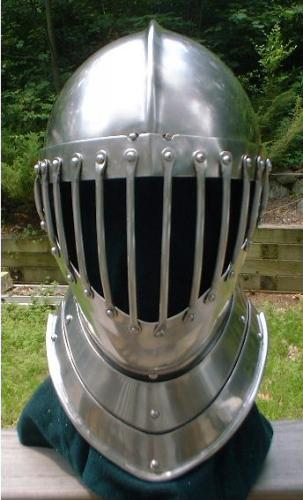
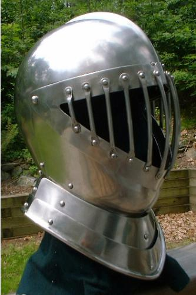


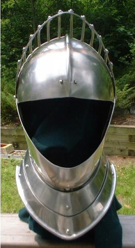
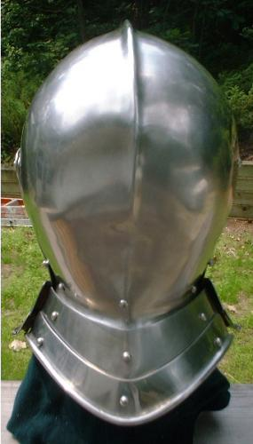
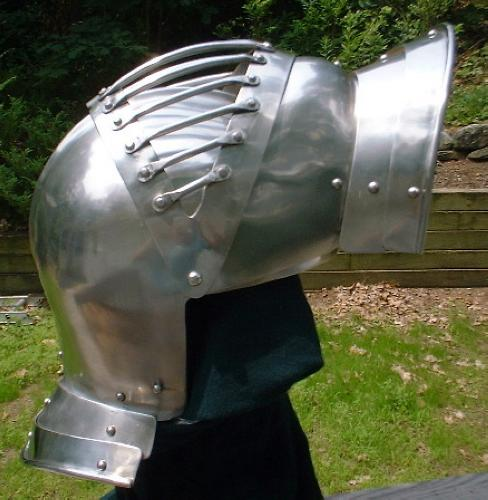
(Please read the instructions below, the notes, and the FAQ
page before asking a question.)
Notes:
This close helm is
patterned after one dated c.1510 in "European Weapons and Armour" by Ewart
Oakeshott on Plate 7 item C. The bar grill visor that is closely
patterned after a late 16th century style tournament visor. It is
all 304 Stainless Steel, (12 ga top and rondel,) 14ga. visor, bevor,
and back, and 16 ga. gorget. The weight is about 11 pounds. It has dual
spring pins to keep visor closed.
The pattern is sized for
someone with a head that is 24 inches around at forehead level and 10 inches
from the top of their head to the top of their shoulders.
I would build this helm in the following order:
1) Cut out the plates.
2) Finish the plate edges and corners.
3) Punch/Drill the two pivot holes in the bevor and the
tops of the visors where they are marked on the patterns.
3) Role the edges on the two bottom neck lames.
4) Dish and shape the top halves.
5) Weld the top halves together.
6) Shape the back plates and weld them onto the back the
helm's top (also weld them together) .
7) Grind welds flush on the outside and cleanup weld on
the inside if needed.
8) Put a medium (around a 220 grit) finish on the helm.
9) Shape the bevor and fit it to the helm.
10) Shape the plates for the sparrows beak visor and fit them together.
11) Weld the plates for the sparrows beak visor together.
12) Grind welds flush on the outside and cleanup welds on the inside
if needed.
13) Put a medium (around a 220 grit) finish on the sparrows beak visor.
14) Fit the visor and the bevor to the helm and mark where you want
the two pivot points.
15) Drill/Punch 1/4" holes for the two pivots.
16) Use 1/4" rivets for the pivots. I drill 3/32" holes near the end
of the rivet shafts for cotter pins. This way I can remove the rivets and
change the visors. Be sure that the length of the rivets aren't excessive.
17) Shape the plates for the bar grill visor and fit them to the helm.
18) Weld the plates together for the bar grill visor.
19) Grind welds flush on the outside and cleanup welds on the inside
if needed.
20) Put a medium (around a 220 grit) finish on the bar grill visor
(frame).
21) Fit the visor to the helm again and adjust as needed.
22) Shape the bars and rivet them in place. I use 5/32" rivets for
this.
23) Drill/Punch a 3/8" hole in the tail plate on the back of the helm
where you want to attach the post and rondel.
(24-31 This is how I make the post and rondel)
24) Grind and/or sand the head of a 3/8" partly threaded hex bolt so
that it is a semi round head. The part of the shaft of the bolt that is
seen
on the outside of the helm should be unthreaded.
25) Cut a 3" diameter disc out and finish the edge.
26) Drill/Punch a 3/8" hole in the middle of the disc.
27) Put the bolt through the hole in the disc so that the disc is against
the head of the bolt and weld the disc onto the shaft of the bolt.
28) Weld a washer onto the bolt just above where the threading ends.
29) Clean up the welds on the post and rondel (bolt and disc) as needed.
30) Put the threaded end of the bolt through the hole on the
tail on the helm and use a nut to attach it.
31) Be sure to cut off any excess on the bolt shaft that
extends pass the nut. Finish the end of the bolt so that it isn't sharp.
If you plan on
using the helm with the post and rondel you will want to get
or make a low profile nut so it does hit you in the back of the neck.
32) Put each visor on the helm and mark a line on the top of the helm
where the top edge of the visors are near the center. If one visor comes
up higher in the center then the other you will need to cut and/or grind
it down until they both line up the same.
33) Drill holes for spring pins on each side of the comb/crest where
the lines for the top edge of the visor are.
34) Attach spring pins and adjust the holes for the pins as needed.
35) Polish the helm and neck lames.
36) Attach the neck lames.
[Back to Armour Page][Back
to Main Page]
Copyright 2000 Craig W. Nadler All rights reserved